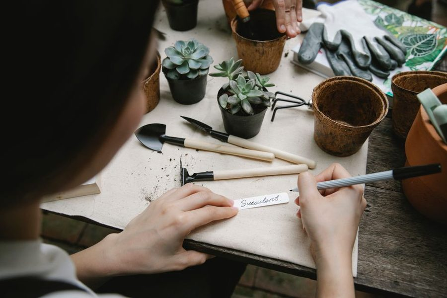

Sobre · quem escreve
Quem escreve o Varanda Verde
Duas pessoas, uma varanda a nascente com quatro horas de sol e a mania de apontar o que resulta e o que não resulta.

Isto começou como um caderno de rega. Anotávamos o que tinha sido regado e quando, porque nunca nos lembrávamos, e acabámos a anotar também o que morria e porquê. Quando o caderno passou a ser útil a mais gente do que a nós, virou site.
Como escrevemos
Cada recomendação passa pela varanda antes de ser publicada. Quando a prática desmente o texto, o texto muda e a data de revisão muda com ele. Não publicamos listas de dicas copiadas nem promessas de jardim perfeito em duas semanas.
Evitamos também números inventados. Quando dizemos quatro horas de sol ou dois centímetros de terra seca, é o que medimos aqui — e pode não coincidir com a sua varanda.
Aquilo em que não entramos
Aqui não há loja, não há produto nosso à venda e recusamos artigos encomendados por marcas a fingir de texto editorial. Havendo publicidade nestas páginas, virá assinalada.
Contacto
Correcções, críticas e sugestões pelo endereço contacto [arroba] varandaverde ponto cfd. Lemos tudo. Não respondemos a dúvidas individuais, mas as repetidas viram texto.
Correcções
Erro de facto corrigido leva nota no fim do texto, com data. Preferimos deixar o rasto à vista do que fingir que estava certo desde o início.